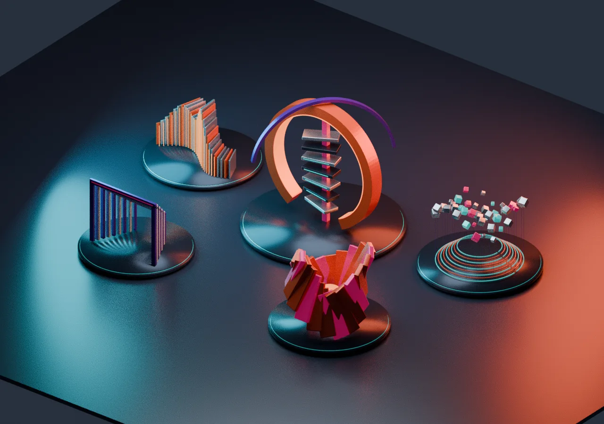

FIELD
REALTIME EXPERIMENT / 001
SPATIAL STUDY — 001
异构场SCULPTURE FIELD
结构、信号与重力之间。
一个没有固定观看方式的雕塑空间。
拖动旋转 · 滚轮缩放 · 右键平移单指旋转 · 双指缩放与平移
空间正在形成
载入雕塑与光线…

CONNECTION TO THE FIELD结构、信号与重力之间。
一个没有固定观看方式的雕塑空间。
载入雕塑与光线…

CONNECTION TO THE FIELD